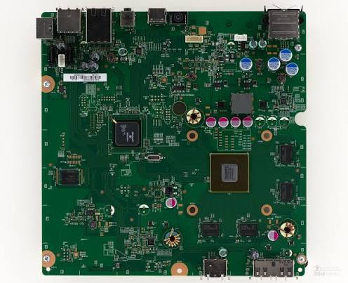
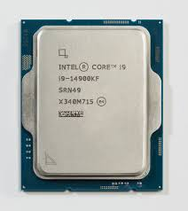
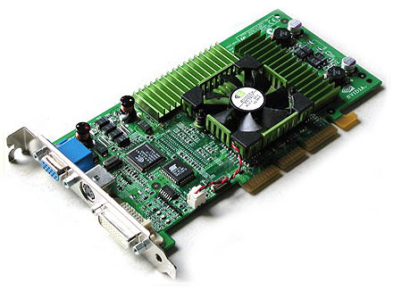
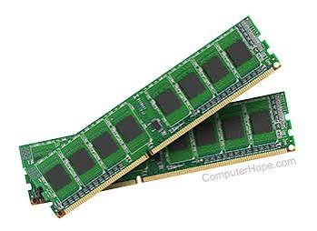
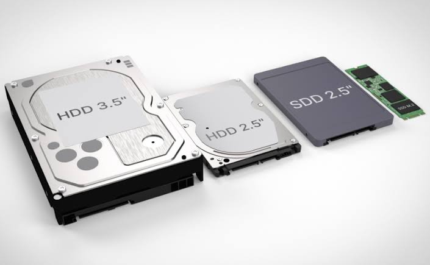

Evolution of Hardware
A detailed historical breakdown of essential computer components, key pioneers, architectural shifts, and technical specifications.
🖥️ Motherboards

The motherboard acts as the foundational printed circuit board (PCB) connecting all critical hardware modules together. IBM introduced the first modern motherboard layout—known as the "planar board"—in 1981 for the IBM Personal Computer. Over time, standard forms evolved from raw AT layouts to modern ATX, Micro-ATX, and Mini-ITX form factors, establishing standardized socket connections, high-speed PCI Express buses, power delivery phases, and chipset interfaces.
- Origins: IBM PC Planar Board (1981)
- Form Factors: AT, ATX (Intel 1995), Micro-ATX, Mini-ITX
- Core Role: Distributes power and bridges CPU, RAM, GPU, and chipset buses.
⚙️ Processors (CPUs)

Central Processing Units perform instructions and logical operations required by software. The CPU revolution started in 1971 with Intel's 4004—the first commercial single-chip microprocessor. Modern processors scaled from basic 4-bit operations up to 64-bit multi-core architectures containing billions of transistors fabricated on nanometer nodes, executing billions of clock cycles per second.
- First Chip: Intel 4004 (2,300 transistors)
- Architectures: x86 (Intel/AMD), ARM, RISC-V
- Key Features: Multi-threading, L1/L2/L3 Cache, Clock boosting
🎮 Graphics Cards (GPUs)

Graphics Processing Units specialize in parallel mathematical computations needed to generate 3D graphics and process heavy parallel software workloads. After 3dfx popularized dedicated 3D acceleration cards in the 1990s, NVIDIA introduced the GeForce 256 in 1999—coining the term GPU. Modern graphics processors feature specialized Ray Tracing and AI Tensor cores capable of trillions of operations per second.
- First Modern GPU: NVIDIA GeForce 256 (1999)
- Key Technologies: Direct3D, Vulkan, Ray Tracing, Tensor AI Cores
- Role: High-speed 3D rendering, video encoding, machine learning training
⚡ Memory (RAM)

Random Access Memory provides fast, temporary read-and-write storage for running application data. Robert Dennard invented single-transistor Dynamic RAM (DRAM) at IBM in 1966. RAM evolved from SIMM and DIMM sticks to Synchronous DRAM (SDRAM) and standard Double Data Rate (DDR) memory, doubling data transfers per clock cycle across generations DDR1 through DDR5.
- Invention: Dynamic RAM (DRAM) patented in 1968
- Generations: SDRAM, DDR1, DDR2, DDR3, DDR4, DDR5
- Role: Volatile system workspace for active programs and OS processes
💾 Storage (SSD / HDD)

Non-volatile storage preserves digital files when system power is disconnected. IBM created magnetic Hard Disk Drives (HDDs) in 1956 using mechanical spin platters. Fujio Masuoka invented Flash memory at Toshiba in 1980, creating the foundation for Solid-State Drives (SSDs). Modern NVMe M.2 SSDs use high-speed PCIe lanes to read data in excess of 10,000 MB per second.
- HDD Origin: IBM RAMAC 305 (1956)
- Flash Origin: Toshiba NOR/NAND Flash (1980/1987)
- Modern Standard: NVMe PCIe M.2 SSDs replacing mechanical disks